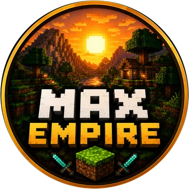

☀️Sun
₹69 one-time
- Sun chat tag
- Exclusive starter kit
- Priority join
- 2 extra homes

Every sunrise is a fresh start. Join our cracked survival world with Java or Bedrock, no premium account needed.
Everything you need to settle, build and grow with friends.
Gather, craft, trade and defend your base in a fair, classic survival world.
Java and Bedrock players build together in the same world.
Join with any username. No paid Minecraft account needed.
Always on the newest Java and Bedrock releases.
Support the server and unlock perks starting at ₹69.
Get help, find teammates and buy ranks in our support server.
One-time purchases that support the server. Pay in rupees through our Discord.
Two minutes from download to your first sunrise.
PLAY.SUNMC.QZZ.IO.PLAY.SUNMC.QZZ.IO and port 19327.Quick answers before you hop in.
Yes. You can join with any username, no premium Minecraft account required.
The latest Java Edition and the latest Bedrock Edition.
Use the address PLAY.SUNMC.QZZ.IO with port 19327. Java players only need the address.
Choose a rank in the store, enter your Minecraft username, then send the copied order in a ticket on our Discord. Payment is in rupees (INR).
Survival.